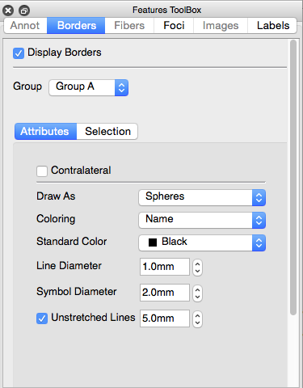

Features Toolbox
The Features Toolbox contains controls for
displaying features including Borders, Fibers,
Foci, and Labels onto the data being
displayed on structures.
The Features Toolbox is not displayed by default, but is turned on
with the  button (or with View >
Features Toolbox) and attached to the right side of the Viewing
Area. It can also be detached
from the Workbench Window by left click + drag on the top
of the Features Toolbox. To reattach,
double click on the top
of the Features Toolbox.
button (or with View >
Features Toolbox) and attached to the right side of the Viewing
Area. It can also be detached
from the Workbench Window by left click + drag on the top
of the Features Toolbox. To reattach,
double click on the top
of the Features Toolbox.
There are 4 tabs in the Features Toolbox, each controlling a
different kind of feature's display:
Borders controls attributes
and selection of borders on surfaces.
Fibers controls attributes, selection, and samples of fibers on
surfaces and in volumes.
Foci controls attributes and selection of foci on surfaces and
in volumes.
Labels controls attributes and selection of
labels on surfaces and in volumes.
Tabs are inactive (grayed-out) if no files are
loaded containing a particular Feature.
